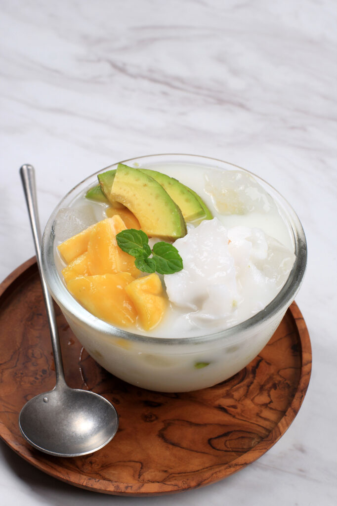

ES TELER

Discription
Es Teler is an Indonesian icy fruit cocktail dessert. It is prepared with avocado, coconut jackfruit and other fruits and mixed in a sweetened coconut milk, sweetened condensed milk.
Often Es Teler is found a a street food in Indonesia and is perfect for hot days.
Serve Es Teler in a cup or bowl with a spoon. Typically it is eaten with a spoon but the liquid portion can be sipped.
Ingredients
-
2 cans jackfruit, drained and sliced into ¼’’ strips
- 1 can palm fruit
- 1 can young coconut meat, drained and sliced into ¼’’ strips, syrup reserved
- 2 fresh avocados, halved, stoned and chopped into ½’’ cubes
- 1 jar coconut gel cubes
- Sweetened condensed milk, as required
- Crushed ice
Steps
- Toss the jackfruit and coconut meat slices into a large bowl and pour in the reserved syrup.
- Tip the can of palm fruit into a fine mesh sieve to drain and reserve its preserving syrup.
- Dump the drained palm fruits into the bowl with jackfruits plus coconut milk, along with half of the reserved syrup.
- Drain the coconut gel cubes from its jar and toss them into the bowl to join the above ingredients.
- Throw in the avocado chunks into the same bowl and toss them all together to mix thoroughly.
- Empty 2-3 heaped cups of crushed ice into the bowl to cool down the fruits and drizzle 5 tbsp sweetened condensed milk over them.
- Stir them all together gently to mix well and pour in more condensed milk to suit the preference of your sweet tooth.
- Spoon the es teler into serving bowls and serve chilled.